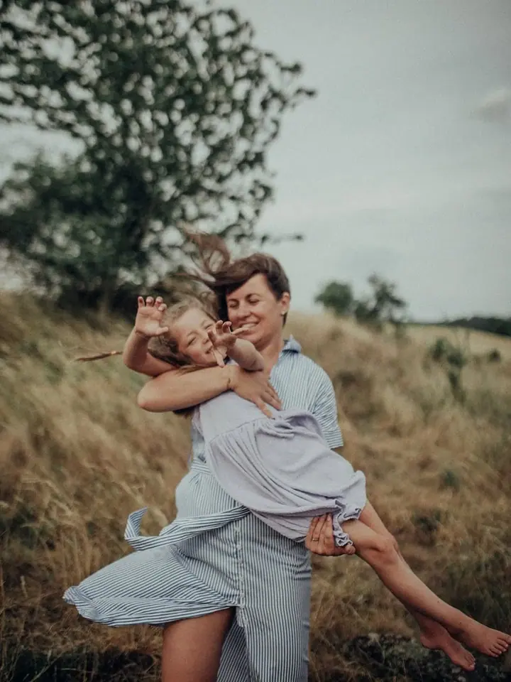
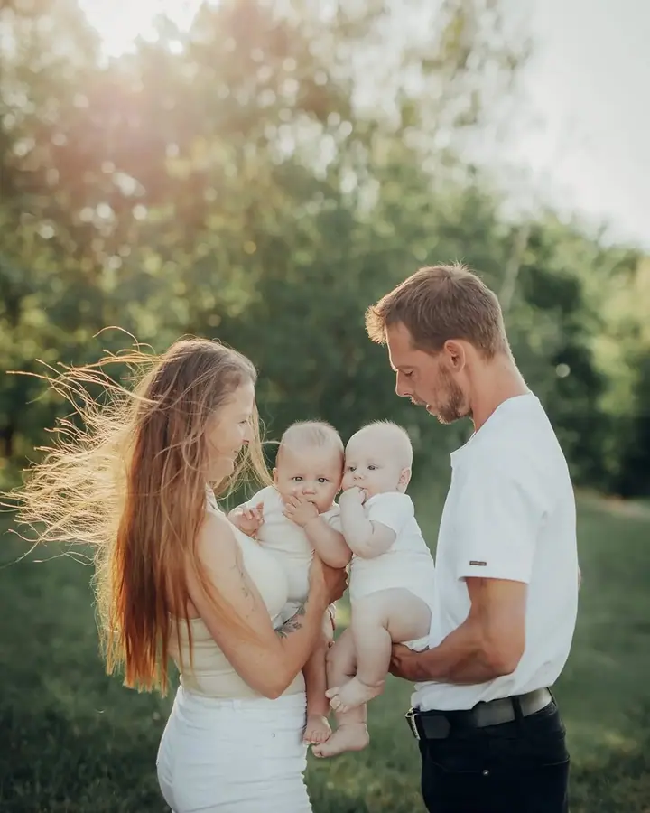
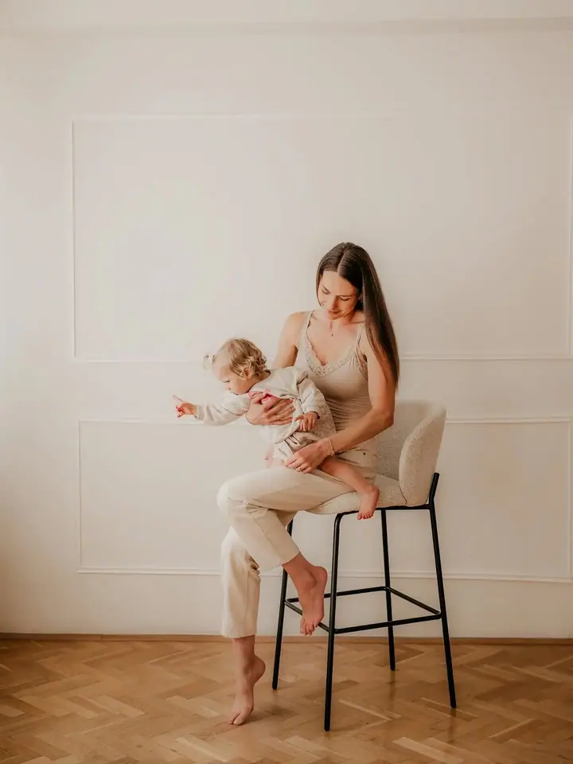
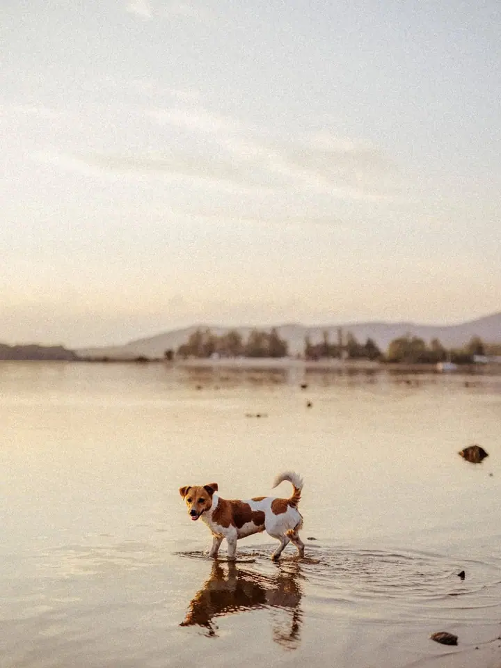

Rodinné a dětské focení
Mám přirozený přístup k dětem a vím, kdy nechat prostor a kdy rozesmát. Nečekám dokonalost, jde mi o emoce a pohodovou atmosféru.

Jmenuji se Andrea Stropnická a jsem rodinná fotografka z Hoštic u Volyně. Fotím rodiny, děti, páry i maminky, které čekají miminko, nejraději venku v teplém světle před …
Rezervovat termínAhoj, jsem Andrea, vaše rodinná fotografka a především máma tří dětí. Specializuji se na dětská, rodinná, párová, portrétní a těhotenská focení. Fotím v Hošticích u Volyně a okolí, v ateliéru ve Stříteži, a moc ráda přijedu i k vám domů nebo na zahradu.


Rodinnou dynamiku znám z vlastní zkušenosti, a tak mám s dětmi trpělivost a nečekám od nikoho dokonalost. Do ničeho vás nenutím, přizpůsobím se, a když bude potřeba, poradím vám. Žádné focení není stejné, stejně jako není stejná žádná rodina.
Pomůžu vám vybrat oblečení, ať spolu ladíte i s okolím. Ve svém foto šatníku mám kousky, které vybírám a kupuji právě pro vás. Každá fotka, kterou si vyberete, pak u mě projde poctivou úpravou.
Co fotím
Mám přirozený přístup k dětem a vím, kdy nechat prostor a kdy rozesmát. Nečekám dokonalost, jde mi o emoce a pohodovou atmosféru.
Fotím vaši lásku venku v přírodě, nejraději před západem slunce a při něm, kdy je světlo nejkrásnější.
Fotím venku v okolí Hoštic nebo v ateliéru ve Stříteži. Když budete chtít, půjčím vám šaty ze svého foto šatníku.
Fotím i svatby, s respektem k vašemu příběhu a k tomu, jak si svůj den představujete.
Postup
Napište mi a společně vybereme termín. Fotíme v Hošticích u Volyně a okolí, v ateliéru ve Stříteži nebo u vás doma. Přesné místo v přírodě vám v den focení pošlu jako špendlík na mapě.
Poradím vám s barvami i střihy, ať spolu ladíte a fotky působí nadčasově. Když budete chtít, půjčím vám šaty ze svého foto šatníku, jen mi dejte vědět předem.
Klasické focení trvá přibližně 45 až 60 minut, balíček „Celý příběh“ 60 až 90 minut. Nejhezčí světlo bývá před západem slunce a při něm.
Do 3 pracovních dnů vám pošlu odkaz s náhledy, ze kterých si vyberete. Upravené fotky dostanete e-mailem do 30 pracovních dnů od výběru.
Otázky
Domluvíme si nový termín během pár dní, nebo můžeme využít ateliér ve Stříteži.
Napište mi a poradím vám. Ráda vám pomůžu s výběrem, nebo vám oblečení půjčím ze svého foto šatníku.
Neupravené fotografie neposkytuji. Náhledy slouží jen k výběru, všechny vybrané fotky pak projdou profesionální úpravou a pár z nich vám přidám i v černobílé verzi.
Ano, za příplatek 1 000 Kč vám fotky dodám rychleji. Napište mi to ale prosím ještě před focením.
